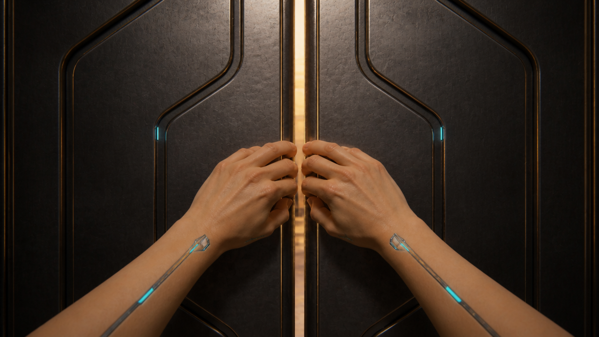

10 — First-person steel-door strength
Cyberpunk transit service passage
Open native video
The shot begins with the approved paired first-person hands, human skin/chrome inlays and nearly closed intact steel doors. The gap gradually widens from around0.75 seconds; inner door edges visibly bow and gather lasting folds near the grip locations rather than remaining flat. Hands broadly retain contact with their corresponding edges, release around3.5–3.75 seconds, then leave the frame. Camera advances through the opening from about4 seconds; a coherent cyan/gold futuristic transit passage, reflective floor and layered towers are revealed. Bent edges remain visible after hand release, so the change is persistent rather than a reset to intact doors.
What still needs testing
- Deformation is rounded and soft-looking rather than sharply creased heavy steel; material weight and strength impact need playback judgment.
- Force application takes most of the clip and is slower than the specified person-width opening by2.8 seconds.
- Exact finger anatomy/contact during motion and physical passage clearance are not established by sampled frames alone.
- Native audio decoded and measured only; no independent assurance of speech/music absence or sound-event synchronization.
- Full take is5.042 picture seconds, while the existing edit slot is3.75 seconds. No trim, retiming, accepted-cut replacement or final selection has been applied.
10 — Strength / intact doors before bending
Transit service entrance

Both door leaves now have straight, intact inner edges with a narrow vertical opening. The earlier crumples and wide mid-bend gap are gone. Paired first-person hands grip near the center; natural skin and narrow chrome/cyan inlays remain.
What still needs testing
- Grip contact and eventual metal bending must remain coherent during animation.
- Centimetre-scale gap and real-world hand dimensions are prompt targets, not measured physical quantities.